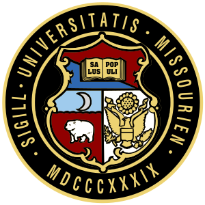

The University of Missouri–Kansas City (UMKC)is a public research university serving the greater Kansas City metropolitan area. Located in Kansas City, Missouri, UMKC is one of four universities affiliated with the University of Missouri System. The university is spread across multiple locales; the main Volker Campus, home to the majority of university operations, is located in Kansas City's Rockhill neighborhood, east of the Country Club Plaza, and adjacent to both the Stowers Institute for Medical Research and the world-renowned Linda Hall Library. In 2017 the University, in collaboration with Truman Medical Center, Children's Mercy Hospital, the Missouri Health Department, the Jackson County Medical Examiners Office, and the Missouri Department of Mental Health Behavioral Medicine, formed the UMKC Health Sciences District on Hospital Hill. This district is a first-in-the-nation partnership between local and state governments, the university, and these nationally recognized healthcare faculties, designed to promote collaboration in research, innovation, education, grant funding, and community outreach, for the advancement of health and wellness in the greater Kansas City metropolitan area. Also in 2017, the university announced plans to expand its metropolitan identity with the construction of a downtown Campus for the Arts, located near the Kauffman Center for the Performing Arts. The university's enrollment as of 2015 exceeded more than 16,600 students.
